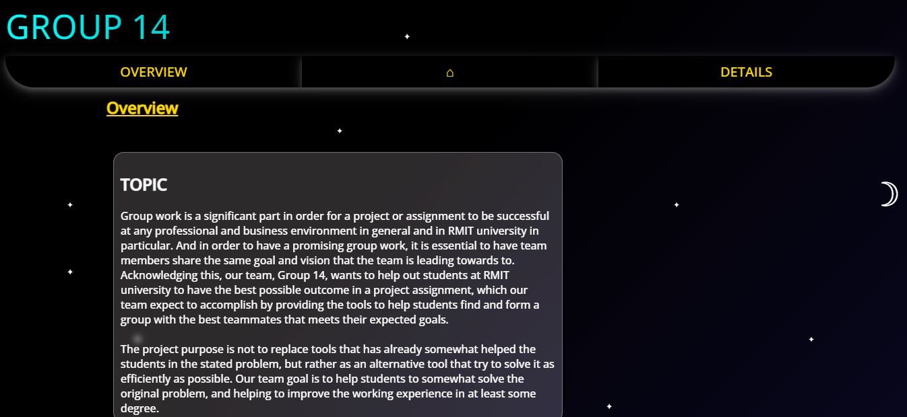

Project 1
Title: Landing Page
Description: This is a landing page for a RMIT group projects in RMIT classes. This is also my first ever fully fleshed projects with basic features
Technologies: HTML, CSS, Javascript
Project 2
Title: Password Management System
Description: Remembering a lot of passwords and accounts is a really hard challenge for me, so I want to create a app that can help me to store and easily access to the authentication pages that I need while only need to remember 1 master passwords. This project can help users to store passwords securely and can even recommend strong passwords in most cases. And all of these passwords can only be accessed via a master passwords that the user need to remember
Technologies: Python
Project 3
Title: Recipe recommondation and managing website
Description: I want to push my limit by creating a fullstack website in this project, which I believe can help me to be better at Web programming. This project is about recommeding recipe for meals randomly or by search through specific category of meal in the database. Users can also suggest their own recipe, adding it to the database, or can create their own list of favourite meals and can access it at any time
Technologies: MERN stack
Project 4
Title: Hand writing recognition
Description: Besides web programming, I also want to create a AI model that can recognize handmodel and translate it into want format, which will be helpful for people who have bad hand writing like me.
Technologies: Jupyter Notebook, PyTorch framework, MySQL